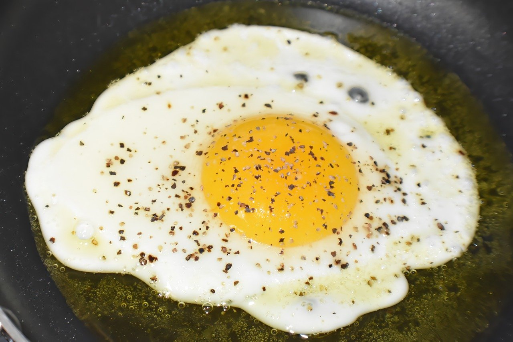

Perfect Fried Egg

Description
You may be thinking, I know how to make an egg. That may be true, but can you make a perfect fried egg? That's the point of this recipe.
So, what makes a fried egg perfect? In this author's opinion, it has that ooey-gooey, "just right" yoke consistency that's neither too hard nor too runny.
Ingredients
- One (1) large egg
- Cooking spray or a pat of butter
- A non-stick pan with a flat bottom
- A pinch of salt and pepper
Steps
- Grease your non-stick pan with a light coating of cooking spray or a pat of butter. (WARNING! I recommend adding these before you heat the pan to avoid injury (from spray can) or burning the butter.)
- Heat the greased pan on medium-high heat until spray or butter coats the pan evenly. You may need to spread the butter around.
- Reduce heat to medium. Crack your egg into the center of the pan, being careful not to drop the egg from too high and risk cracking the yoke.
- Allow one side of the egg to fry up. Listen to the sizzle. Is it too quiet? Turn the heat up a little. Is it loud and popping? It's probably too high. Find the sweet spot, and cook until the whites are mostly cooked through and not too runny on top.
- Use a flat spatula suitable for non-stick surfaces to flip the egg. Flip confidently, but carefully and don't slap the egg down and risk breaking the yoke. Try to get most of the spatula under the egg. If the egg is ready, it should lift up from the pan surface without tearing.
- Turn the heat to low to finish the egg off. The surface will be hot enough, and you don't want to overcook this side of the egg. This side will cook much quicker than the previous, usually no more than a minute.
- Carefully lift the egg off the pan with your spatula and plate up. Finish with salt and pepper to taste.
- If you've done it correctly, the egg whites will be cooked through with just a little crackly browning at the edges, and the yoke will have a gooey golden-orange center that still runs when broken with your utensils. Bon appétit!
Options and Tips:
- Everyone has a different definition of perfection. This is just one possible way of approaching your perfect egg!
- If you like other spices or toppings (e.g. scallions), then by all means, add them! You can also season at almost any point during cooking.
- Remember, the secret of a great egg lies in the relationship between egg white and yoke. If either isn't right, the whole egg suffers. Find the balance!